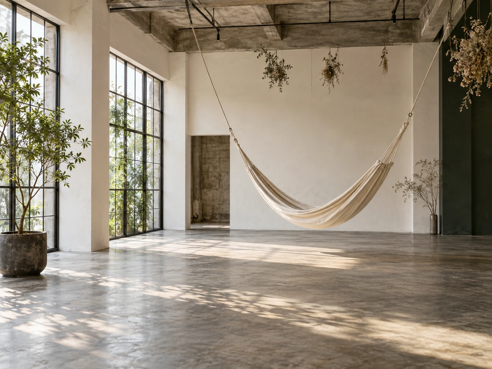

CONCEPT
東京から持ち帰ったものが、
2つあります
Nice Time Coffee は、秋田市大町にあります。2019年10月7日に開店し、今年で7年目です。 店主は、東京・清澄白河のコーヒー専門店「iki Espresso」で働いていた方です。
受け継いだもの ＝ 豆と、レシピ
コーヒー豆は、いまも iki Espresso から仕入れたブレンドを使っています。看板のリコッタチーズパンケーキは、そのお店の店主からレシピを譲り受けたものです。
開店して半年ほどで、新型コロナの影響を受けられています。 営業に苦労された時期を、5年目にこう振り返られていました。
お客さまや友人に支えられて営業を続けられた。 秋田経済新聞（2024年10月7日）に掲載された、店主の言葉より
約30坪の店内は、天井が高く、ゆとりがあります。 昼はコーヒーとパンケーキの店として。金曜と土曜の夜は、そこに別の営業が重なります。 ひとつの場所が、時間によって違う使われ方をしているお店です。
